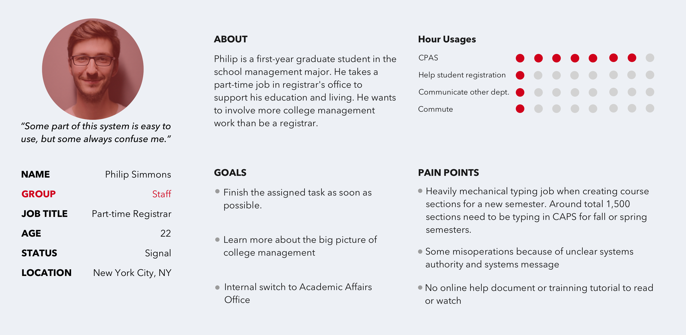
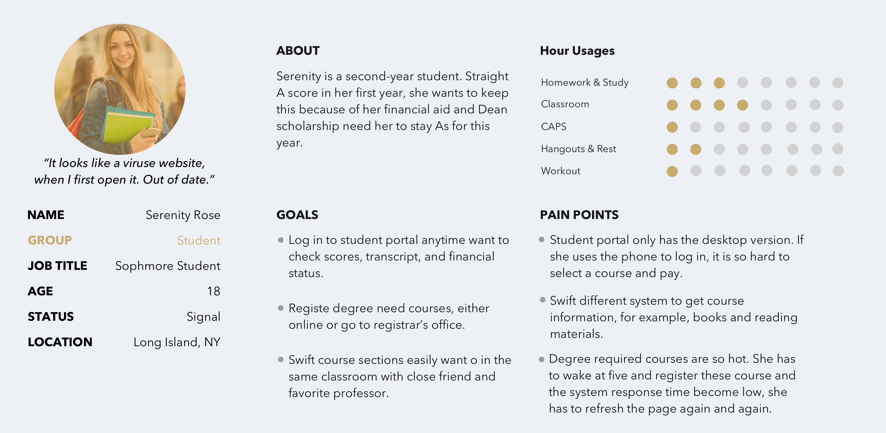
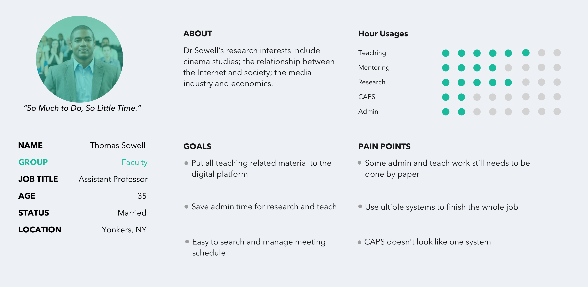
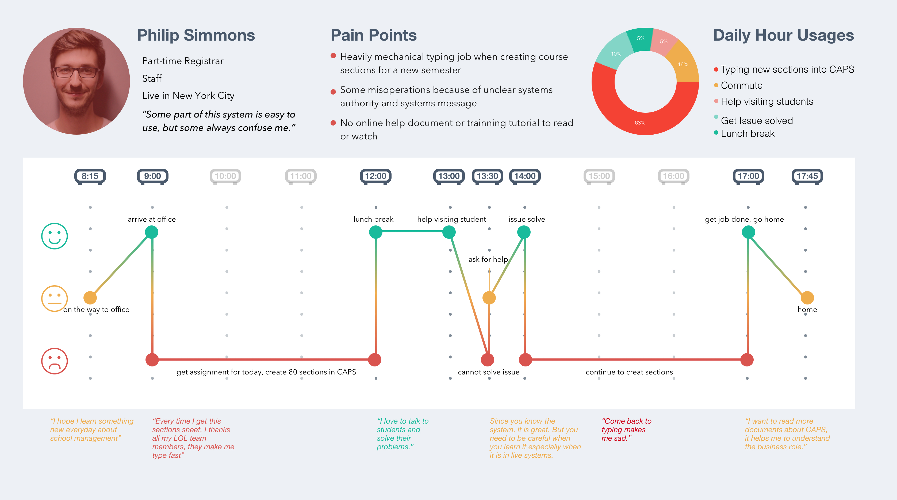
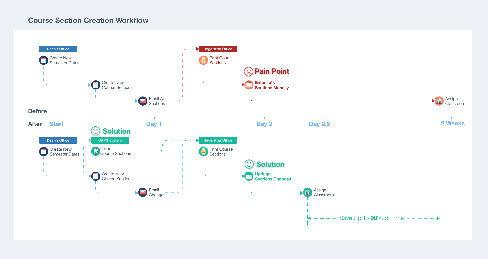
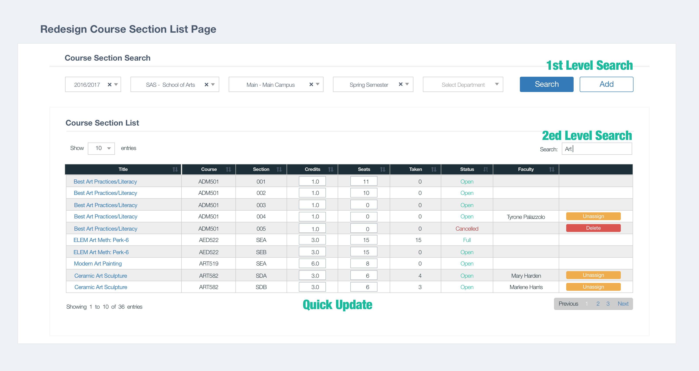
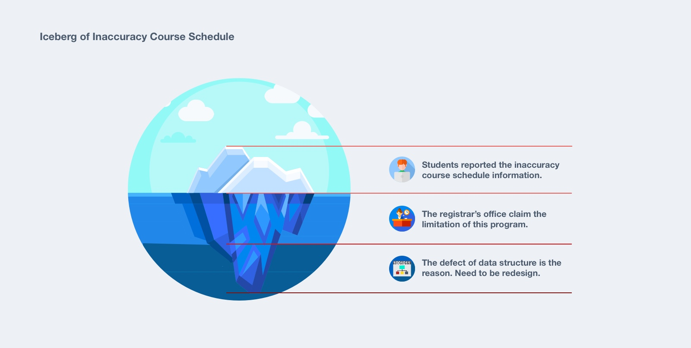
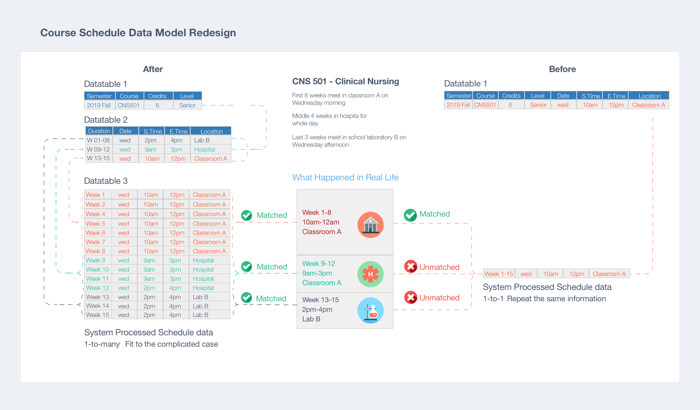

1. BACKGROUND
CAPS (College Administrative Process System) is a comprehensive system for college and university administration offered by DB Systems. The platform consists of nine modules that are responsible for managing institutional operations. While employed by DB Systems, my role was working as a developer, and later a designer. The CAPS project was given to me to handle as the only designer in the team where my responsibility was to improve the user experience related to this platform. I took the platform from an outdated IBM green screen to a current web application with the capacity to grow over time. By the end of the project, I had redesigned 2.5 of the nine modules and redesigned the online application user interface (UI) with a detailed UI guide across the entire platform, providing all end users with a more seamless online experience within the CAPS program.


2.Problems
began by using the platform as a typical user would. The goal was to experience the product and identify any potential issues.Additionally, user support records were studied for the same purpose. The following issues were identified:
1,Inefficient workflows slowed down users’ working progress. One example I noted was that prior to the beginning of course registration for students at the beginning of a semester, registrars needed to input hundreds of course sections’ information into the system manually. The system demanded unnecessary steps to complete a task making it an unfriendly experience.
2,The inconsistent UI caused communication obstacles between the system and end-users. As a result of seeing different colors and designs used in different locations in the program to execute the same operations users became confused as they moved from feature to feature. In some cases this prevented users from finishing their workflow. To accomplish their tasks, many users needed to contact the development team for assistance. This added user-support role distracted the team. Rather than working on programmatic updates or developments, the team spent much of their time providing user support or doing data entry.
3. PLAN & EXECUTION
To solve these user experience (UX) and user interface (UI) problems, I developed a plan of execution.
- UX: I began with studying the research provided by users. In order to gain insight into where the users were experiencing pain points, this research was necessary for me to provide solutions.
- UI: It was clear that each page on the platform needed to use the same visual language to ‘speak’ with users. I planned to design a UI library that would offer a consistent visual experience to user.
3.1 Workflow redesign case 1
I scheduled and held interviews with end-users. Initially, I spoke with fifteen faculty members and staff, along with five students, from different colleges within the university and employed in different departments. Interview topics were not limited to the web platform. Rather, I tried to understand their campus lives and experiences.
- How were they using the CAPS system?
- Were their other frustrations in their daily campus lives that they had to deal with?
- What was the primary tasks of their daily routines, and how did they best achieve these goals?
- In terms of high and low priority, how did using the CAPS system compare to other tasks in their daily activities?



Additionally, I had opportunities to obverse their work; that was an informative experience for me to see how the volunteers were collaborating with other departments staff, interacting with students.
During the research, I found a pain point from the registrar's office; afterward, for solving this issue that became one project.

Additionally, I had the opportunity to observe these individuals in their work. This was an extremely informative experience for me as I learned how the volunteers in my study were collaborating with other department staff and interacting with students. During the research phase, I found a pain point within the Office of the Registrar. Solving this issue became another project I undertook.
The project for the Office of the Registrar involved improving the course section creation process. The pain point was identified as an issue of timing and manual entry. Prior to that the registration date, the registrar's office receives approximately one thousand, five hundred course section records in Excel files from the offices of each of the deans. They are printed out, and data is manually entered into the system. This effort takes approximately almost two weeks.
My initial first was to upload the course sections in an Excel file to the system. However, the data format and content of all these files are inconsistent from office to office. It would take the development team by far too much time and effort to code a flexible program that could read the array of variables.
Next I considered a concept that is reminiscent of an Arabian night's story. The system created these course sections by itself. The reason is evident; it was the most convenient way for the registrar's office to get all the information into the system. But how? I visited the deans’ offices and heard the whole story.
When the President's office announces the beginning and ending dates for the new semester, the dean's assistant creates a new semester record for the school in our system and checks all of the section changes for the new semester (i.e. as credits). Later on, the assistant makes a copy of the previous semester’s file and updates these changes. It is important to note that rate of changes is roughly 5% of the total records. Finally, the new file is sent to the registrars' office via email.
So my solution was to have the back-end program clone all of the course sections from the previous semester to the new one once the assistant created a semester record. Only changes needed to be sent to the registrar's office. The result was the ability of the developer to code the back-end clone program in less than a half of one business day.

Additionally, I redesigned the homepage section’s UI with a two-level search feature and a quick update feature to help users search and make changes more readily. The first level-search was for targeting semesters, the second search then narrowed down to the specific sections. The quick update feature allowed the user to make changes in the list instead of visiting the section detail page. The combined changes made for a more seamless UX for all of the users working with the program.

3.2 workflow redesign case 2
At points in the project, I found that I needed to dig far more than I had originally anticipated. The appearance of the user's pain points was, in fact, the tip of a programmatic iceberg. Students' complaints about the inaccuracy of the course schedule information that was published online was forwarded to me to rectify. For example, some of the spring/fall semester courses were short-term classes, offered only for the first half of the semester. However, when the students attempted to register for another short-term class for the second half-semester, they had to go through multiple course schedule pages and create a calendar to check any time conflicts between the courses. This vital information helped provide a direction for the program’s redesign.

I studied our database structure, and came to the development team to discuss the redesign. The current course section data table contained the schedule information. This design fixed one-to-one relationships between courses and the schedule, which means a course section can only be associated with one day of the week, blocking the day/time throughout the semester.
The solution was to change the one-to-one data model to a one-to-many model, dividing the individual and enormous data table into three smaller ones.
- One of the three data tables only had sections that contain academic information like course level, credits, and cloned from the previous semester.
- The second table maintained schedule information such as start and end date as well as records related to any skips or weeks off. The registrar's office added the schedule information.
- The third one had the information on day, time and location for each individual class.
The testing results showed that the issue was resolved through this solution. Moreover, by utilizing this data structure, the program now had a flexible infrastructure from which to design additional features (i.e. classroom time conflict checking, student/faculty class calendars posted on their portal homepage). Framing the problem and finding the right team with whom to work was the key to solving this problem.

3.3 UI Redesign
I started to redesign the UI library with observations of how different types of users interacting with our platform.
I gathered data on the most visited pages on the system and cut these pages into fundamental design units (i.e. input field and dropdown). After redesigning these small pieces, I put them back into a design pattern with several versions, like the data table. I refreshed the design of these pages with one final version. Finally, I placed all of these into one UI library.

For the delivery part, I coded HTML/CSS templates based on the UI library. All of the developers coded with the same visual and layout through the whole platform.

I presented the new UI to the client, but quickly recognized that a one-size screen design could not fit all users' needs. The registrars use office desktops to review course information; professors use tablets to check students' attendance; students use cell phones to pay tuition. Considering these scenarios, I introduced a responsive design to the team. Since we had implemented the CAPS UI library and open source JS libraries, we spent less effort while achieving more positive outcomes. After eight weeks of design, testing, and development, CAPS became a responsive system.

4.Takeaway
Asking the right questions to understand the true problems is critical to successful design. As a designer, learning to communicate with end users is a fundamental skill needed to frame the issues. It is also vital that the designer interact meaningfully with the team. Listening, contributing, taking ownership, and collaborating wisely are the needed elements to ensure project/product success.